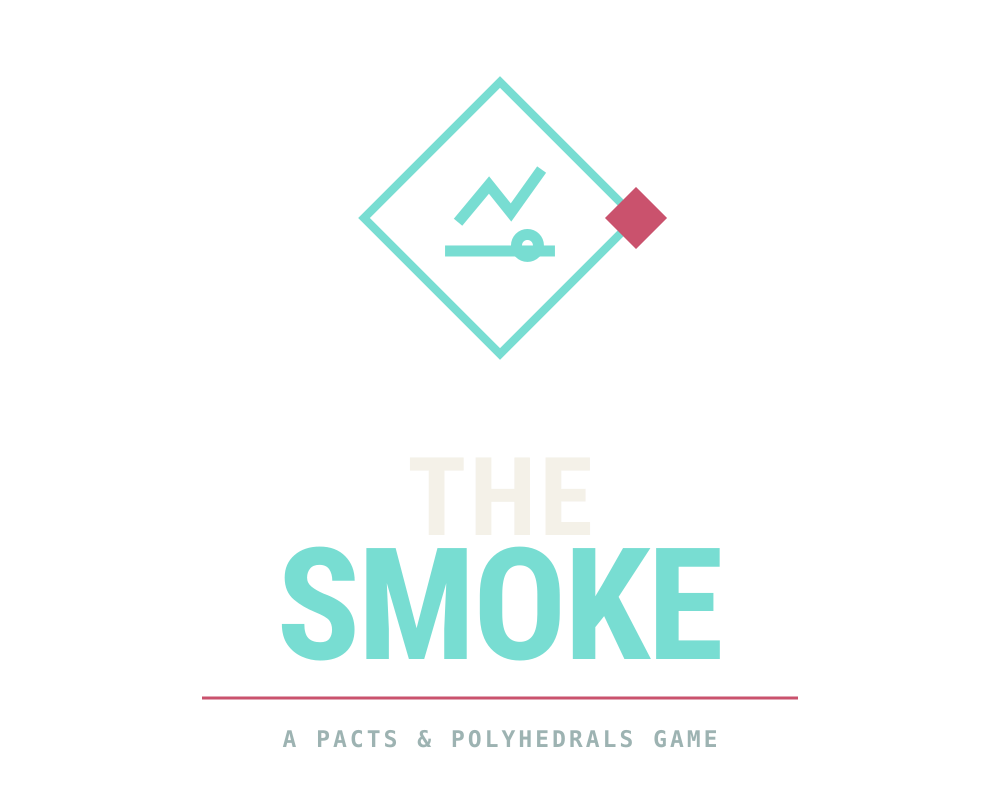
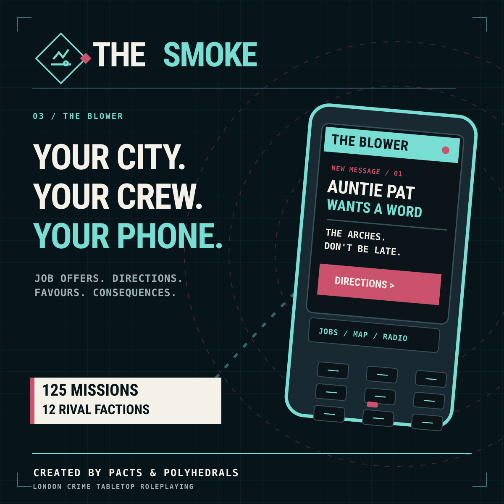
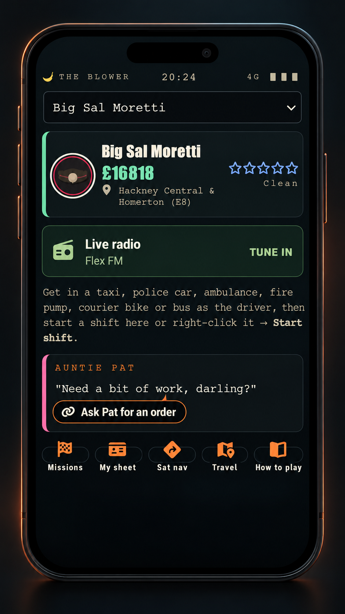
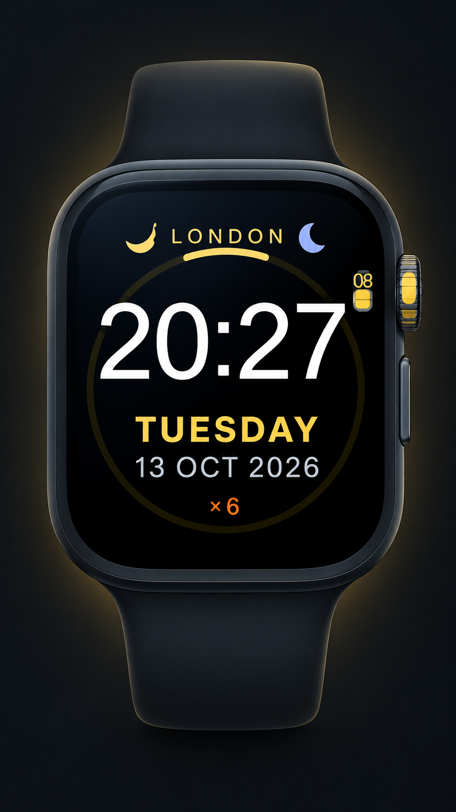

01/
AT THE TABLE
Get the current beta player rulebook. Make your character, learn the Covenant Dice System and bring a set of polyhedral dice. The rules may change during testing.
TABLETOP FIRSTSTART WITH THE RULES
The Smoke is currently in beta testing. Rules, missions and Foundry tools are still being refined.
The Smoke is currently in beta testing. Bring the book to the table, or explore the developing Foundry VTT build; some rules and features will change as the game evolves.
Help shape The Smoke while it is in beta testing. The first 100 verified customers can join as Founding Supporters, receive future beta updates and qualify for a separate $15 full-release upgrade. The initial $5 does not buy the finished edition.
Payments and customer access are handled only through Pacts & Polyhedrals. The store will take payments only after its licensing and security checks are complete.
SEE THE FOUNDERS BETA OFFER
The rules are tabletop-first. The Foundry system helps automate the moving parts, but the people and decisions are still yours.
We're still putting The Smoke through its paces. The tabletop rules, missions and Foundry features are currently in beta testing and may change between builds. The published releases page is the place to check which version is actually available.
SEE RELEASES AND CHANGELOGS ↗Get the current beta player rulebook. Make your character, learn the Covenant Dice System and bring a set of polyhedral dice. The rules may change during testing.
TABLETOP FIRSTSTART WITH THE RULESThe Smoke is currently in beta testing on Foundry VTT v14, with connected maps, character sheets, the Blower, a Mission Board and vehicle play. Some features still need testing and refinement.
BETA BUILD · ONLINE GM CLIENT REQUIREDCHECK PUBLISHED BETA BUILDSOnce the opening jobs are done, London opens up: twelve faction careers, local cases and an unfolding mystery for the GM to run.
THE CAMPAIGN / ON YOUR BIKEEXPLORE THE CAMPAIGNTHE RULEBOOK
NICK A BIKE. WORK A SHIFT.
KEEP YOUR BOTTLE. BUILD A NAME.
The current beta player-readable Homebrewery V3 source is included with this website. It covers character creation, the roll, Hustle, combat, driving, Heat, shops, progression, equipment, vehicles and four ready-to-play characters.
This is the original, editable Homebrewery source text, not a PDF. Paste it into Homebrewery V3 if you want a typeset book. The GM-only campaign book is deliberately not published here.
The bundled player book describes the v0.5.0 rules. The separate Foundry development package has since evolved; consult its changelog for implementation changes.
The Blower is your crew's window onto London: the next job, the people in your pocket, sat-nav directions and live pirate radio. This website includes a small interactive preview of that handset.
Website demonstration only. The full Blower works inside The Smoke on Foundry VTT.

These recreated assets are based on the supplied Blower and watch screenshots, giving the website a cleaner, more intentional look at the in-play interface.

The Blower can surface contacts, money, stations, travel cues and mission prompts in a single screen. It helps the crew feel embedded in a living London rather than reading static menu text.
Shown here as a website illustration. The deeper interactive version lives in the Foundry build.

The watch face reinforces The Smoke's day-and-night London identity and works as a useful supporting visual for timing, shifts, scene pressure or simply the feel of being out on the road.
The Foundry VTT v14 integration is in beta testing. Updates and fixes are still being worked through.
Not yet. The Smoke is currently in beta testing. The rules, mission content and Foundry VTT tools are being playtested, so you may see changes and occasional rough edges. Check the published releases for the latest available build.
Yes. The player book presents the tabletop dice and character procedures, and the campaign is run by a GM. Foundry simply adds digital automation, linked maps and tools.
The streets are based on real geography in North and East London. Characters, factions, interiors, criminal plots and game-world services are fictional.
Self-play mode offers automated mission progression, but the current build still requires an online GM client to make authoritative world updates. Some social and contested outcomes need judgement.
No. The public site intentionally excludes the GM-only mystery, detailed mission objectives, keyed interiors and hidden campaign outcomes.
The Smoke is created by Pacts & Polyhedrals, with game design by Benjamin Vale. It uses the Covenant Dice System, whose separate rights holders are credited below.
Get the rules. Find your crew. Start with one little job and see how far the city lets you go.